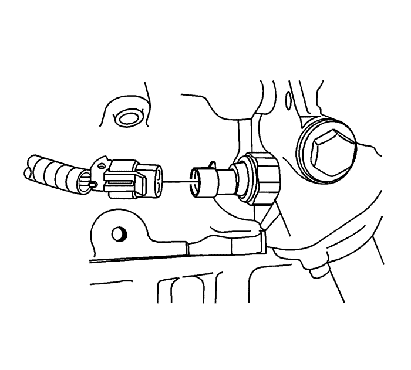
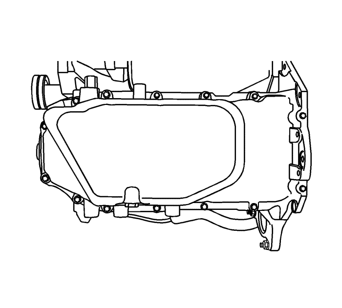
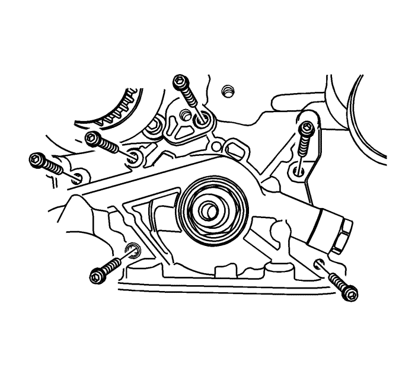
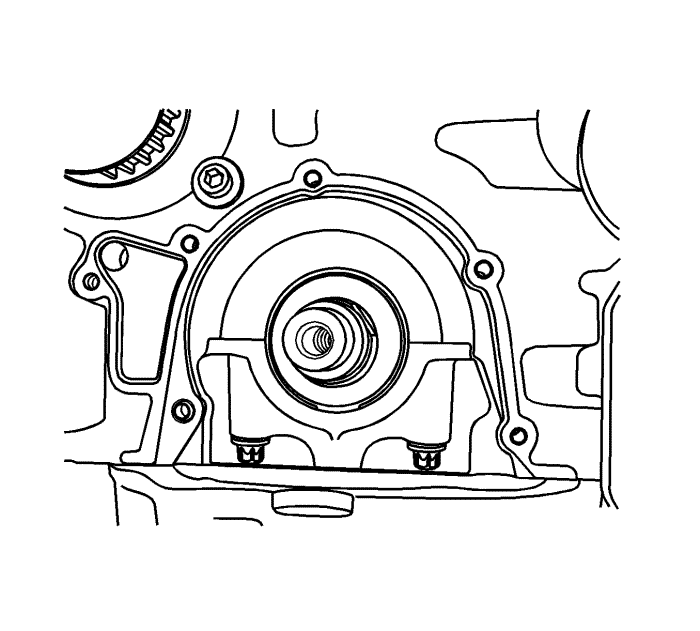
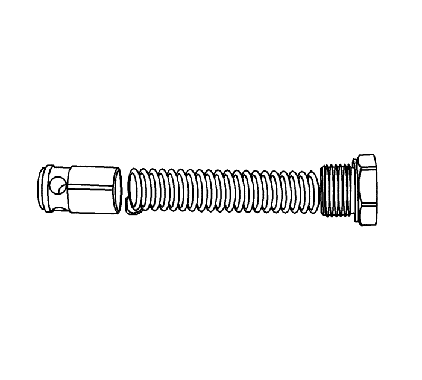
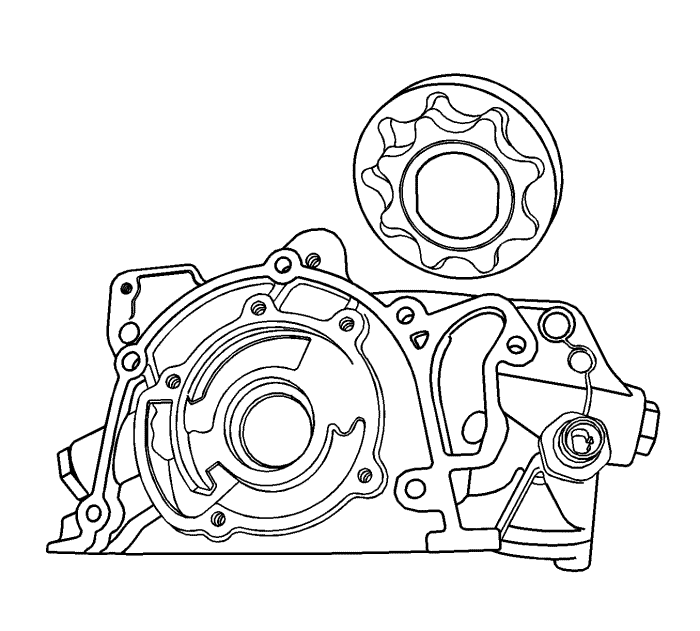
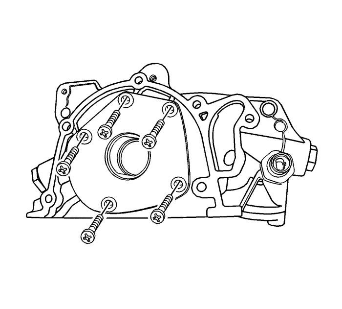
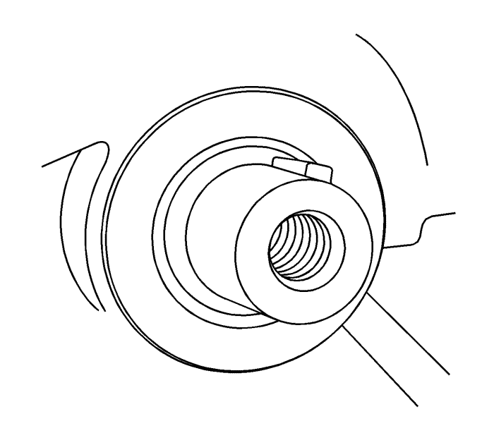

Sustitución de la bomba de aceite
Procedimiento de desmontaje
Advertencia: Consulte Advertencia sobre la desconexión de la batería en la sección Prólogo

- Desconecte el cable de batería negativo.
- Retire la correa dentada. Consultar Sustitución de la correa de distribución .
- Desmonte la tapa trasera de la correa de la distribución. Consultar Sustitución de la tapa trasera de la correa de distribución .
- Desenchufe el conector del presostato del aceite.

- Desmonte el cárter de aceite. Consultar Sustitución del cárter de aceite : LE5 .

- Desmonte los tornillos de retención de la bomba de aceite.
- Separe cuidadosamente la bomba de aceite y la junta del bloque motor y del cárter de aceite.
- Desmonte la bomba de aceite.
Procedimiento de inspección

- Limpie las superficies de contacto de la junta de la bomba de aceite y del bloque motor.

- Desmonte el tornillo de la válvula de descarga de seguridad.
- Desmonte la válvula de descarga de seguridad y el muelle.
- Desmonte el retén de la bomba de aceite al cigüeñal.

- Desmonte la tapa trasera de la bomba de aceite.
- Limpie la carcasa de la bomba de aceite y todos los componentes de la bomba.
- Compruebe si los componentes de la bomba de aceite presentan desgaste. Sustituya las piezas desgastadas de la bomba de aceite.

Nota: Llene la cavidad de marchas de la bomba con grasa de motor para asegurarse de que la bomba de aceite se cebará.
- Recubra todas las piezas de la bomba de aceite con aceite de motor limpio.
Precaución: Consulte Precaución con las fijaciones en la sección Prólogo
- Aplique LOCTITE 242 en los tornillos de la cubierta posterior de la bomba de aceite, monte la cubierta y los tornillos y apriete a 20 N·m (15 lib. pie).
- Monte la válvula de liberación de seguridad, el muelle, la arandela y el perno y apriételos hasta 30 N·m (22 lib. pie).
Procedimiento de montaje
- Aplique LOCTITE 242 en los tornillos de la bomba de aceite y un sellador de vulcanización a temperatura ambiente (RTV) en la nueva junta de la bomba de aceite.
- Monte la junta en la bomba de aceite y monte la bomba de aceite en el bloque motor con los tornillos. Apriete los tornillos hasta 10 N·m (89 lib. pulg.).

- Monte un nuevo retén de la bomba de aceite al cigüeñal. Recubra el labio del retén con una fina capa de grasa.
- Montar el cárter de aceite. Consultar Sustitución del cárter de aceite : LE5 .
- Enchufe el conector del interruptor de presión de aceite.
- Monte la tapa trasera de la correa de distribución. Consultar Sustitución de la tapa trasera de la correa de distribución .
- Monte la correa de distribución. Consultar Sustitución de la correa de distribución .
- Conecte el cable negativo de la batería.
| © Copyright Chevrolet Europe. All rights reserved |